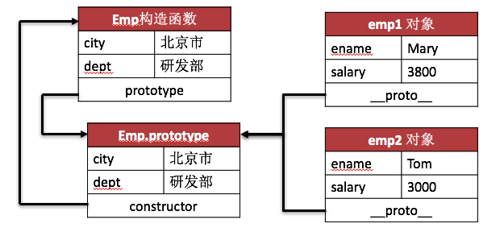
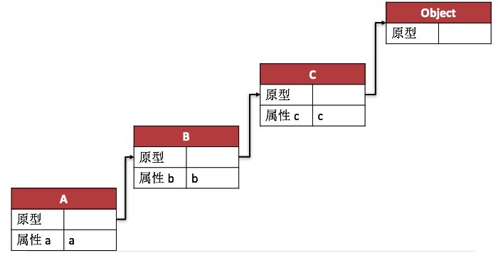
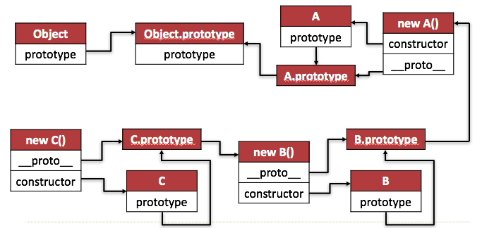

函数是这样的一段 JavaScript 代码，它只定义一次，但可能被执行或调用多次。
Function 类型是 JavaScript 提供的引用类型之一，通过 Function 类型创建 Function 对象。
在 JavaScript 中，函数也是以对象的形式存在的。每个函数都是一个 Function 对象。
函数名，本质就是一个变量名，是指向某个 Function 对象的引用。
在 JavaScript 中，函数除了可以通过函数定义语句或字面量表达式两种方式定义之外，还可以通过 Function 类型进行定义:
var add = new Function(
"num1",
"num2",
"var sum = num1+num2; return sum;"
);值得注意的是: 通过 Function 类型定义函数的效率远不如通过函数定义语句或字面量表达式两种方式定义。
目前，定义函数具有三种方式，这三种方式之间存在一定差别:
| 定义方式 | 执行 | 效率 |
|---|---|---|
| 函数定义语句 | 函数名被声明提前 | 不存在效率问题 |
| 字面量表达式 | 函数体固定，无法动态执行 | 不存在效率问题 |
| Function 类型定义 | 函数体是字符串，可以动态执行 | 效率低 |
由于每个函数都是一个 Function 对象，Function 类型也提供了一些属性和方法:
| 属性名 | 描述 |
|---|---|
| length | 表示函数希望接收的命名参数的个数。 |
| 方法名 | 描述 |
|---|---|
| call() | 在指定的函数内调用另一个函数，参数能够以列表形式传入。 |
| apply() | 在指定的函数内调用另一个函数，参数能够以数组形式传入。 |
| bind() | 用于基于现有函数创建一个新函数对象。同时为新函数对象提前绑定this值或设置参数值。 |
在 JavaScript 中，函数是一个包含属性和方法的 Function 类型的对象。而原型（Prototype）就是 Function 类型对象的一个属性。
在函数定义时就包含了 prototype 属性，它的初始值是一个空对象。在 JavaScript 中并没有定义函数的原型类型，所以原型可以是任何类型。
原型是用于保存对象的共享属性和方法的，原型的属性和方法并不会影响函数本身的属性和方法。
function foo(a,b){
return a + b;
}
console.log( typeof foo.prototype );// object通过如下两种方式可以获取对象的原型，从而设置共享的属性和方法:
function Person() {
console.log('Person instantiated');
}
console.log( Person.prototype );function Person() {
console.log('Person instantiated');
}
console.log( Object.getPrototypeOf( Person ) );通过如下两种方式可以设置原型的属性和方法:
构造函数.prototype.属性名 = 属性值;
构造函数.prototype.方法名 = function(){}构造函数.prototype = {
属性名 : 属性值,
方法名 : function(){}
}function Emp( ename, salary ){
this.ename = ename;
this.salary = salary;
}
Emp.prototype = { city : "北京市", dept : "研发部" }
var emp1 = new Emp("Mary",3800);
var emp2 = new Emp("Tom",3000);上述代码的内存结构图如下:

function Hero(){}
var hero = new Hero();
console.log( hero.hasOwnPrototype("name") );function Hero(){}
var hero = new Hero();
console.log( "name" in hero );通过原型可以为指定构造函数或对象扩展其属性或方法，如下代码示例:
functon Hero(){}
Hero.prototype = {
name : "Mary",
salary : 3800
}
var hero = new Hero();
console.log( hero.name );// Mary通过构造函数或对象的自有属性可以重写原型的属性，如下代码示例:
functon Hero(){}
Hero.prototype = {
name : "Mary",
salary : 3800
}
var hero = new Hero();
hero.name = "Tom";
console.log( hero.name );// Tom通过 delete 关键字可以删除对象的属性，如果该对象既具有原型属性又具有自有属性的话，先删除自有属性，再删除原型属性。如下代码示例:
functon Hero(){}
Hero.prototype = { name : "Mary", salary : 3800 }
var hero = new Hero();
hero.name = "Tom";
delete hero.name;// 删除 Tom
console.log( hero.name );// Mary
delete hero.name;// 删除 Mary
console.log( hero.name );// undefined每个对象中都会具有一个 isPrototypeOf() 方法，该方法用来判断一个对象是否是另一个对象的原型。
var monkey = {}
function Human(){}
Human.prototype = monkey;
var man = new Human();
monkey.isPrototypeOf( man );// true__proto__ 属性functon Hero(){}
Hero.prototype = {
name : "Mary",
salary : 3800
}
var hero = new Hero();
console.log( hero.name );// Mary上述代码说明 hero 对象存在一个指向构造函数 Hero 的原型，这个链接被叫做 __proto__ 属性。
值得注意的是:
__proto__属性与 prototype 属性并不等价。
__proto__属性是指定对象的属性。- prototype 属性是指定构造函数的属性。
再有就是，
__proto__属性只能在学习或调试的时候使用。
JavaScript 中的内置对象有些也具有 prototype 属性，利用内置对象的 prototype 属性可以为内置对象扩展属性或方法。
通过原型扩展内置对象的属性和方法非常灵活，根据个性化要求制定 JavaScript 语言的具体内容。
一般建议慎用这种方式，如果 JavaScript 的版本更新时可能会提供个性化的属性或方法，导致冲突。
如下代码示例，利用 Array 对象的 prototype 属性扩展了 inArray() 方法。
Array.prototype.inArray = function(color){
for(var i = 0, len = this.length; i < len; i++){
if(this[i] === color){
return true;
}
}
return false;
}
var a = ["red", "green", "blue"];
alert(a.inArray("red")); //true
alert(a.inArray("yellow")); //false构造函数或构造器具有 prototype 属性，对象具有 __proto__ 属性，这就是之前学习的原型。
如果构造函数或对象 A ，A 的原型指向构造函数或对象 B，B 的原型再指向构造函数或对象 C，以此类推，最终的构造函数或对象的原型指向 Object 的原型。由此形成一条链状结构，被称之为原型链。
按照上述的描述，在 B 中定义的属性或方法，可以直接在 A 中使用并不需要定义。这就是继承，它允许每个对象来访问其原型链上的任何属性或方法。
原型链是 ECMAScript 标准中指定的默认实现继承的方式。
原型链的示意结构图如下:

function A(){
this.name = "a";
this.toString = function(){return this.name};
}
function B(){
this.name = "b";
}
function C(){
this.name = "c";
this.age = 18;
this.getAge = function(){return this.age};
}
B.prototype = new A();
C.prototype = new B();上述代码实现的示意图如下:

出于对效率的考虑，尽可能地将属性和方法添加到原型上。可以采取以下方式:
根据上述方式进行更改后，代码如下:
function A(){}
A.prototype.name = "a";
A.prototype.toString = function(){return this.name};
function B(){}
B.prototype = A.prototype;
B.prototype.name = "b";
function C(){}
C.prototype = B.prototype;
C.prototype.name = "c";
C.prototype.age = 18;
C.prototype.getAge = function(){return this.age};原型链虽然很强大，用它可以实现 JavaScript 中的继承，但同时也存在着一些问题。
综上所述，在实际开发中很少会单独使用原型链。
所谓原型式继承，就是定义一个函数，该函数中创建一个临时性的构造函数，将作为参数传入的对象作为这个构造函数的原型，最后返回这个构造函数的实例对象。
function object( o ){
function F(){}
F.prototype = o;
return new F();
}根据原型式继承所总结的 object() 函数实现继承，如下代码示例:
var person = {
name : "Mary",
friends : ["Tom","King"]
}
var anotherPerson = object( person );
anotherPerson.friends.push("Rob");
console.log(anotherPerson.friends);// Tom, King, Rob这种原型式继承要求必须具有一个对象可以作为另一个对象的基础。
上述的原型式继承，也可以利用 Object 的 create() 方法替代自定义的 object() 函数，从而实现规范化。
var person = {
name : "Mary",
friends : ["Tom","King"]
}
var anotherPerson = Object.create( person );
anotherPerson.friends.push("Rob");
console.log(anotherPerson.friends);// Tom, King, Rob值得注意的是: 原型式继承具有与原型链同样的问题。
无论是原型链还是原型式继承，都具有相同的问题。想要解决这样的问题的话，可以借助构造函数（也可以叫做伪造对象或经典继承）。
这种方式实现非常简单，就是在子对象的构造函数中调用父对象的构造函数。具体可以通过调用 apply() 和 call() 方法实现。
apply() 和 call() 方法都允许传递指定某个对象的 this。对于继承来讲，可以实现在子对象的构造函数中调用父对象的构造函数时，将子对象的 this 和父对象的 this 绑定在一起。
根据上述描述，借助构造函数实现继承，如下代码示例:
function SuperType(){
this.color = ["red","green","blue"];
}
function SubType(){
// 继承了SuperType
SuperType.call(this);
// 或 SuperType.apply(this,arguments);
}
var instance = new SubType();
instance.color;// red, green, blue组合继承，也叫做伪经典继承，指的是将原型链或原型式继承和借助构造函数的技术组合在一起，发挥二者长处的一种继承方式。
具体实现的思路就是:
这样，既通过在原型上定义方法实现了函数的重用，又可以保证每个对象都有自己的专有属性。
根据上述描述，组合方式继承，如下代码示例:
function SuperType( name ){
this name = name;
}
SuperType.prototype.sayName = function(){
console.log(this.name);
}
funtion SubType( name, age ){
SuperType.call( this, name );// 继承属性
this.age = age;
}
SubType.prototype = SuperType.prototype;// 继承方法本笔记的内容免费开源，任何人都可以免费学习、分享，甚至可以进行修改。但需要注明作者及来源，并且不能用于商业。
本笔记采用知识共享署名-非商业性使用-禁止演绎 4.0 国际许可协议进行许可。